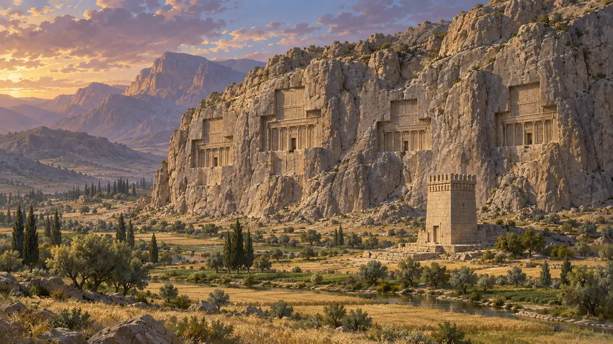
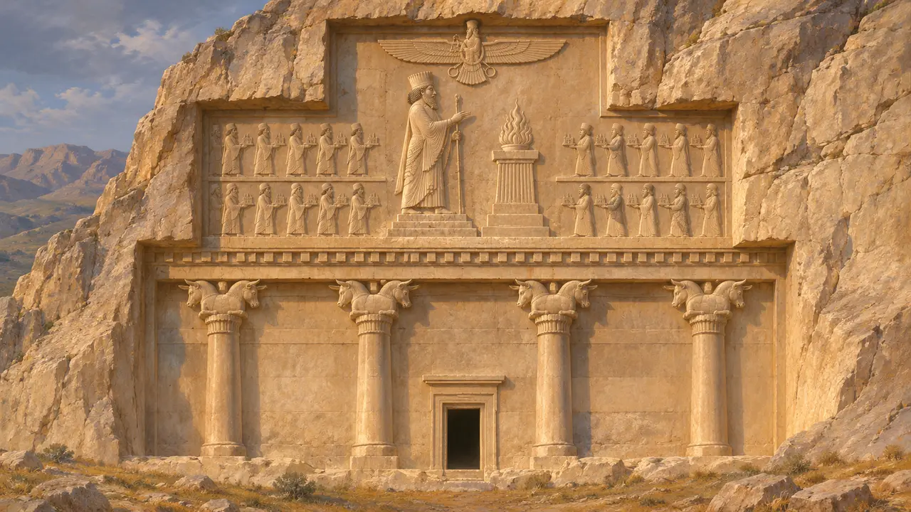
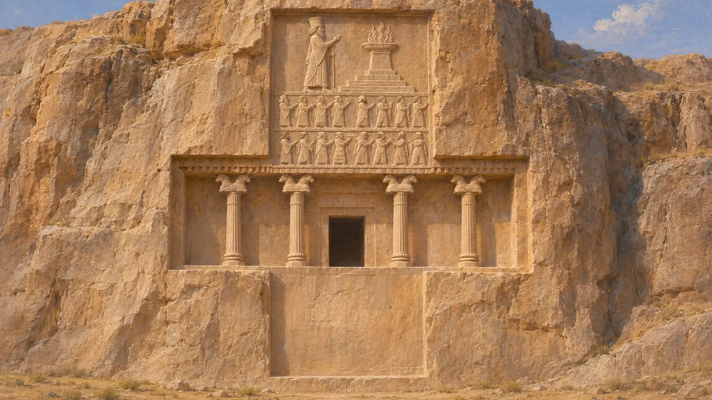
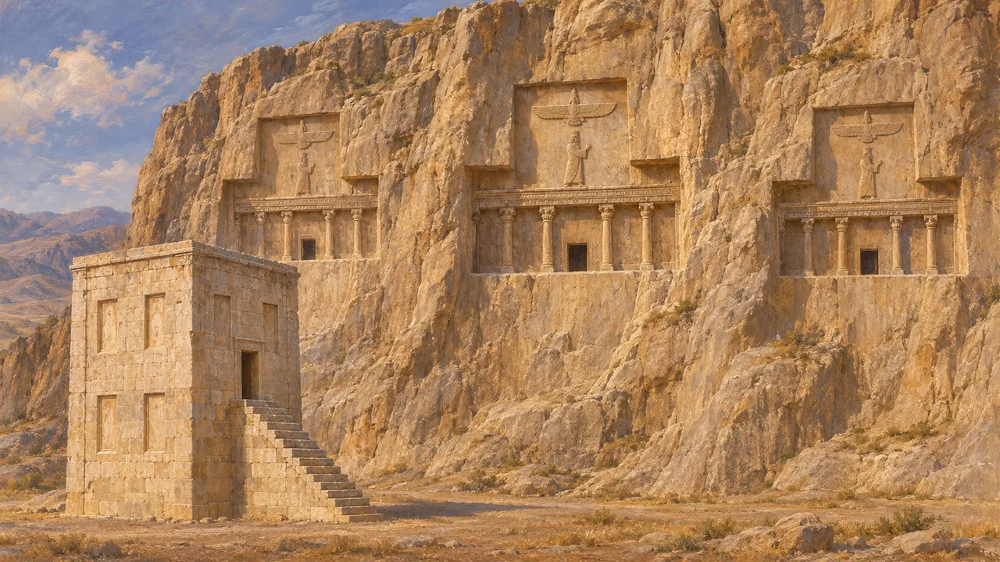
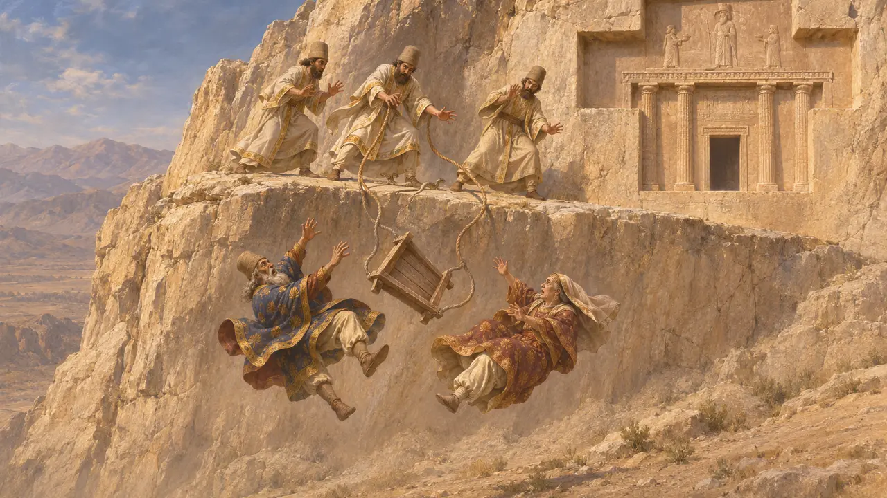
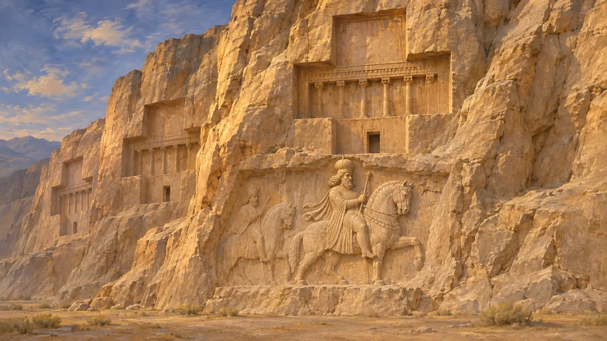

낙셰 로스탐은 페르세폴리스에서 북서쪽으로 조금 떨어진 석회암 절벽으로, 다리우스 1세가 이곳 바위 높은 곳에 자신의 무덤을 깎아 만들게 했다. 훗날 같은 양식의 무덤 세 기가 그 옆에 더 조성되었는데, 아마도 그의 후계자들을 위한 것이었을 것이다. 비문과 부조를 갖춘 무덤 정면은 아케메네스 왕들이 자신들의 통치가 어떻게 비치기를 바랐는지를 가장 분명하게 보여 주는 자료 가운데 하나다.
게임에서: 게임은 페르세폴리스 근처 왕릉에 관한 연대기 주석에서 이 절벽을 언급합니다. 주석은 나중에 조성된 세 무덤을 후대 왕들의 것으로 봅니다. 이 무덤들에는 비문이 없으며, 게임이 끝나는 기원전 479년 이전에 조성된 것으로 알려진 무덤은 하나도 없습니다.

다리우스의 무덤
당대 기록네 무덤 가운데 주인의 이름을 밝힌 것은 하나뿐이다. 그 정면에는 엘람어와 아카드어 판본을 함께 갖춘 고대 페르시아어 비문 두 개가 새겨져 있다. DNa에서 다리우스는 아후라마즈다를 자신에게 왕권을 내린 존재로 밝히고 자신이 다스린 땅들을 열거한다. DNb에서는 자신의 덕목을 서술한다. 약한 자에게나 강한 자에게나 공정하고, 분노를 다스리며, 말을 타고 활을 쏘고 창을 다루는 데 능하다는 것이다.
DNa; DNb; R. G. Kent, Old Persian, 1953

절벽에 새긴 궁전 현관
당대 기록각 무덤의 정면은 십자 모양으로 깎여 있다. 가운데 띠는 기둥 네 개와 출입구를 갖춘 궁전 현관을 본떴다. 출입구는 매장실로 이어지며, 그 안에는 바위를 파서 만든 석관에 시신이 안치되었다. 위쪽에는 대왕이 불의 제단 앞 계단식 단 위에 서 있고, 그 단은 피지배 민족들의 형상이 떠받치고 있다. 다리우스의 무덤에서는 이 운반자들에게 이름이 붙어 있으며, DNa는 보는 이에게 그들을 보고 그가 얼마나 많은 땅을 다스렸는지 알아보라고 권한다.
E. F. Schmidt, Persepolis III, 1970; M. C. Root, The King and Kingship in Achaemenid Art, 1979

다른 무덤에 묻힌 이들
분쟁 중명문이 없는 세 무덤은 보통 크세르크세스, 아르타크세르크세스 1세, 다리우스 2세의 것으로 여겨진다. 이는 어떤 기록이 아니라 무덤의 배치 순서와 양식에 근거한 것이다. 학자들은 왕 위에 있는 날개 달린 형상을 두고도 아후라마즈다로 볼지 왕의 행운을 나타내는 상징으로 볼지 논쟁한다. 또한 절벽 맞은편의 석탑 카바예 자르토슈트에 대해서도 의견이 갈리는데, 무덤, 왕실 물품 보관소, 성소 등으로 해석되어 왔다.
P. Briant, From Cyrus to Alexander, 2002; E. F. Schmidt, Persepolis III, 1970

대왕의 부모에 관한 크테시아스의 기록
고대의 전승후대 페르시아 궁정에 있던 그리스인 의사 크테시아스에 따르면, 다리우스는 자신의 무덤을 보고 싶어 했으나 직접 올라가는 것은 만류당했다. 대신 그의 부모가 사제들이 당기는 밧줄에 매달려 절벽 위로 끌어올려졌다. 그런데 뱀을 보고 놀란 사제들이 밧줄을 놓치는 바람에 두 사람 모두 떨어져 죽었다. 이 이야기는 후대의 요약본으로만 전해지며, 역사가들은 신중하게 다룬다.
Ctesias, Persica (epitome of Photius)

로스탐의 이름
후대의 전설이 이름은 '로스탐의 그림'이라는 뜻이다. 아케메네스 왕조가 사라지고 오랜 뒤, 현지 사람들은 이곳의 조각을 페르시아 서사시의 영웅 로스탐의 모습으로 여겼다. 이 조각들에는 말을 탄 왕들을 새긴 후대 사산 왕조의 부조도 포함된다. 아케메네스 왕조의 왕들이 로스탐을 알았다는 근거는 없으며, 이 이름은 무덤을 만든 이가 누구인지에 대해 아무것도 말해 주지 않는다.
E. F. Schmidt, Persepolis III, 1970
출처
- E. F. Schmidt, Persepolis III: The Royal Tombs and Other Monuments, 1970
- R. G. Kent, Old Persian: Grammar, Texts, Lexicon, 1953
- M. C. Root, The King and Kingship in Achaemenid Art, 1979
- P. Briant, From Cyrus to Alexander, 2002
- A. Kuhrt, The Persian Empire, 2007
- Ctesias, Persica (epitome of Photius)